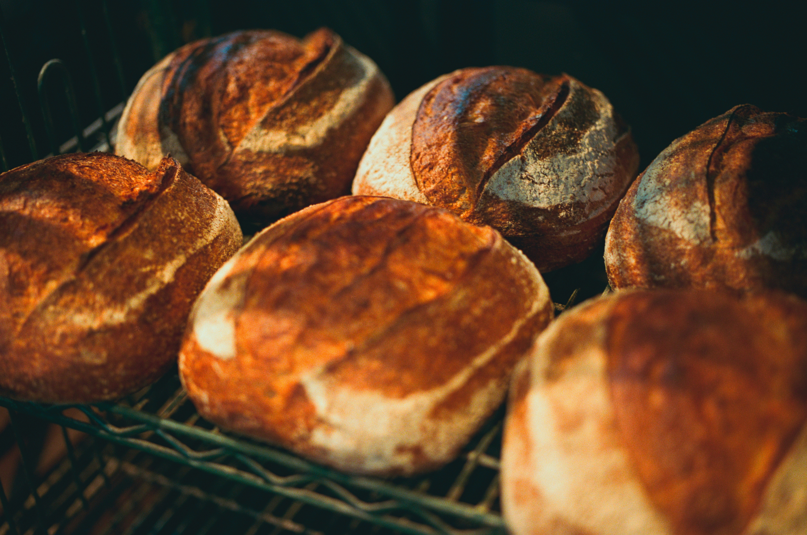
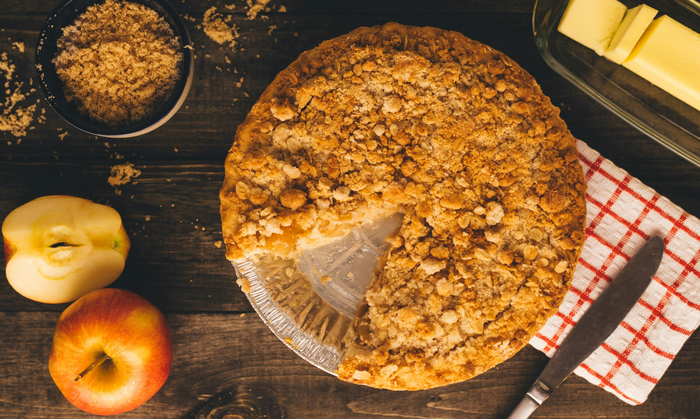
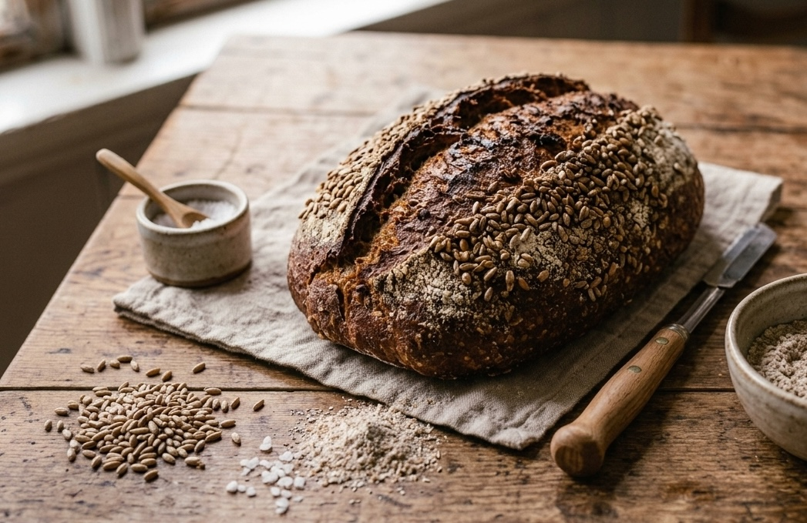
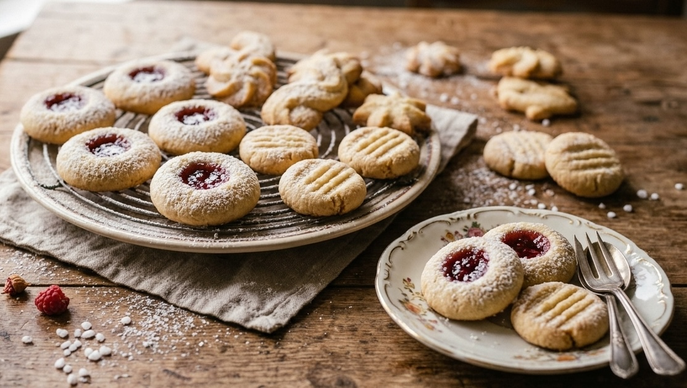
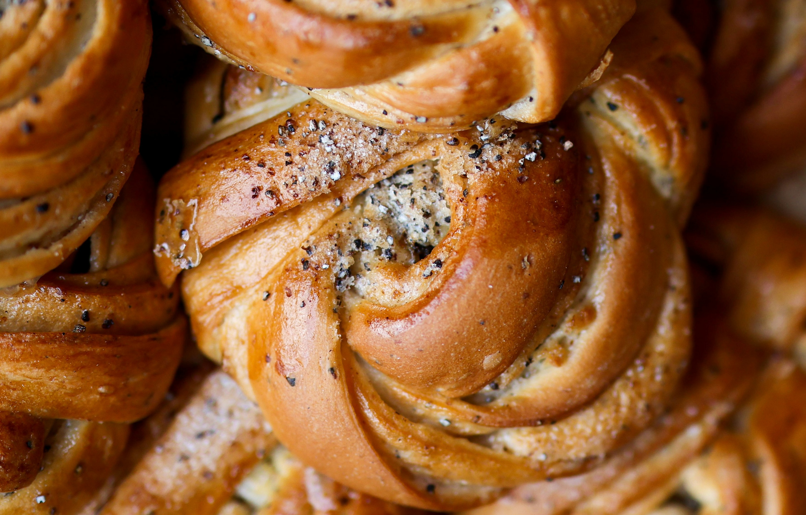
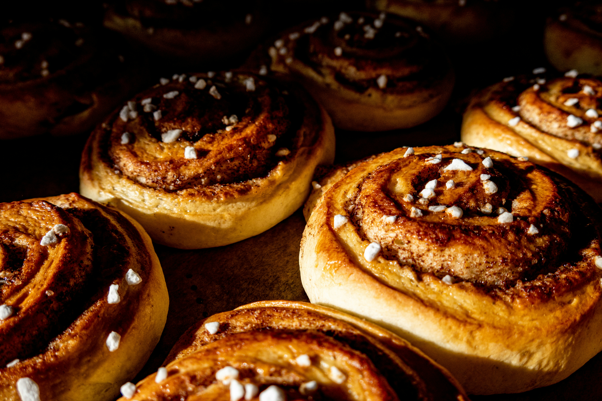

Vårt sortiment
Här hittar du vårt aktuella sortiment av bröd och bakverk. Vi bakar med omsorg, använder närproducerade råvaror och följer recept som låter de klassiska smakerna komma till sin rätt.
Utforska vårt utbud ↓

Surdegsbröd
Långjäst surdegsbröd bakat på ekologiskt dinkelmjöl och råg.

Äppelkaka
Saftig äppelkaka med kanel och äppelbitar.

Rågbröd
Mustigt rågbröd med fyllig smak och en härligt rustik karaktär.

Mördegskakor
Klassiska småkakor med smörig smak och en spröd, gyllene yta.

Kardemummabullar
Luftiga bullar fyllda med nymald kardemumma och farinsocker.

Kanelbullar
Saftiga kanelbullar med mjuk deg och fyllning av kanel och smör.